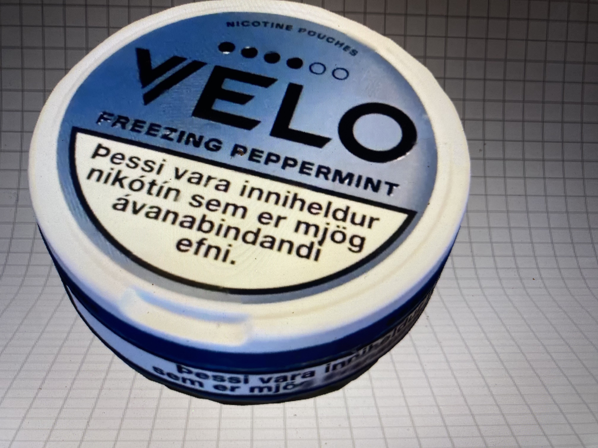
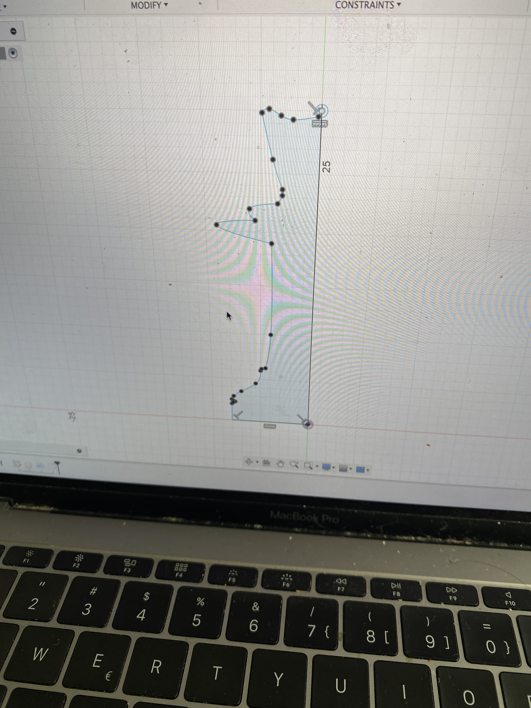
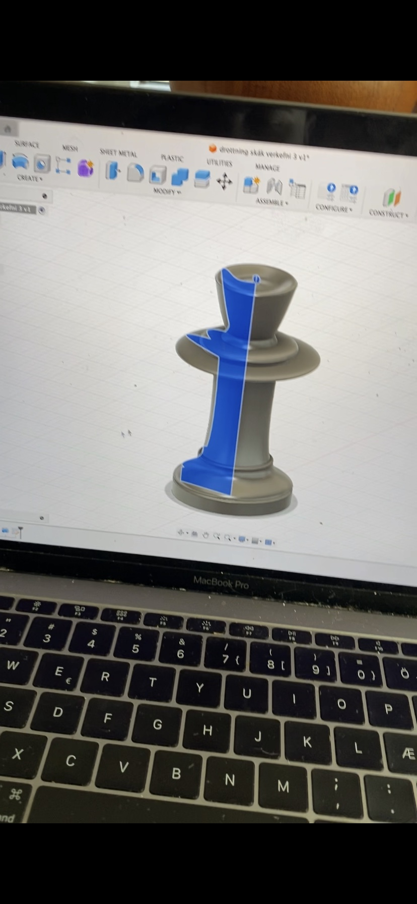
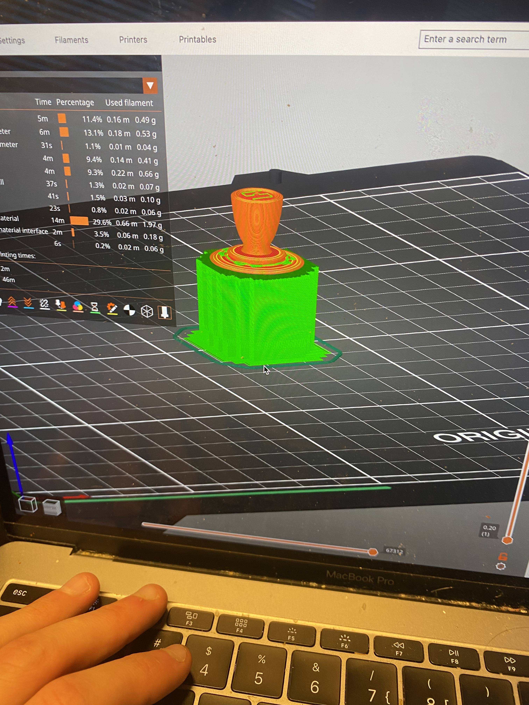
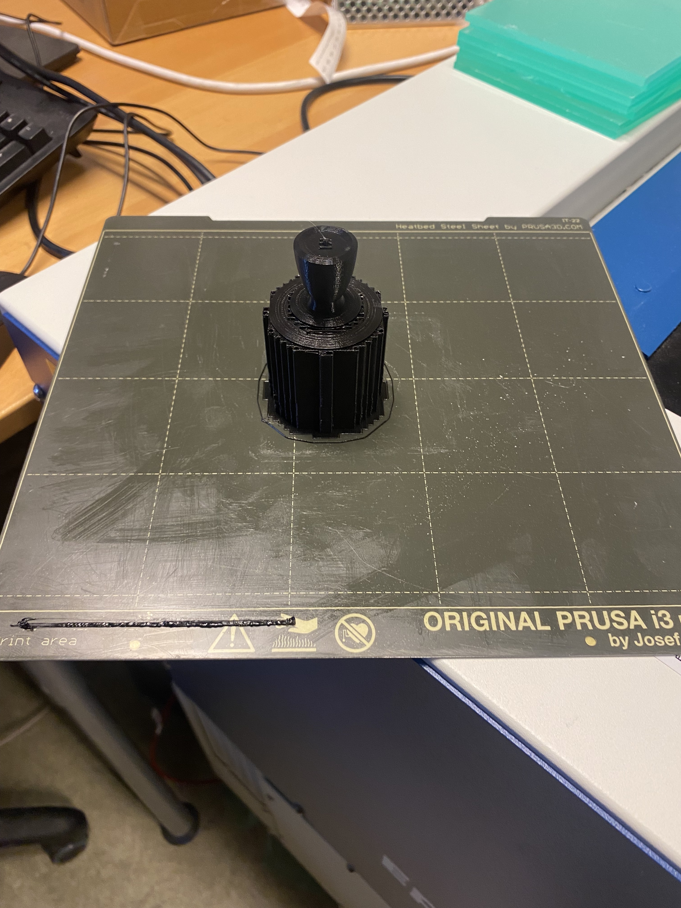
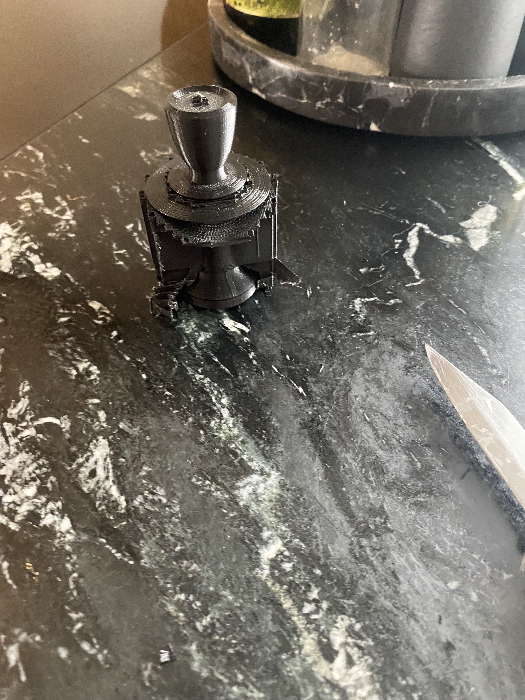
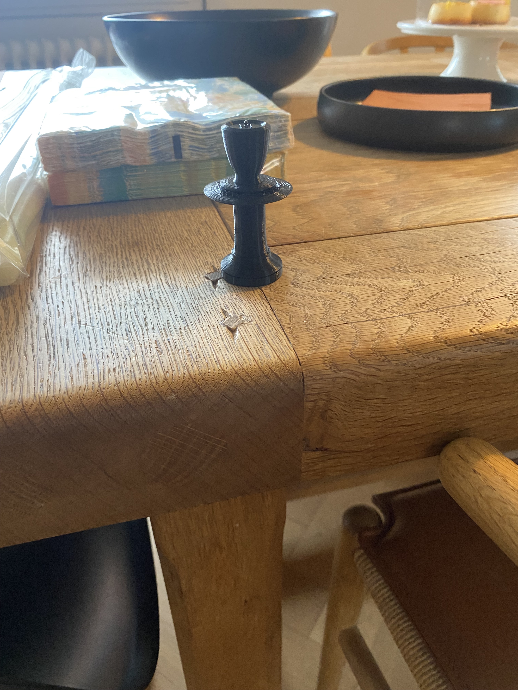
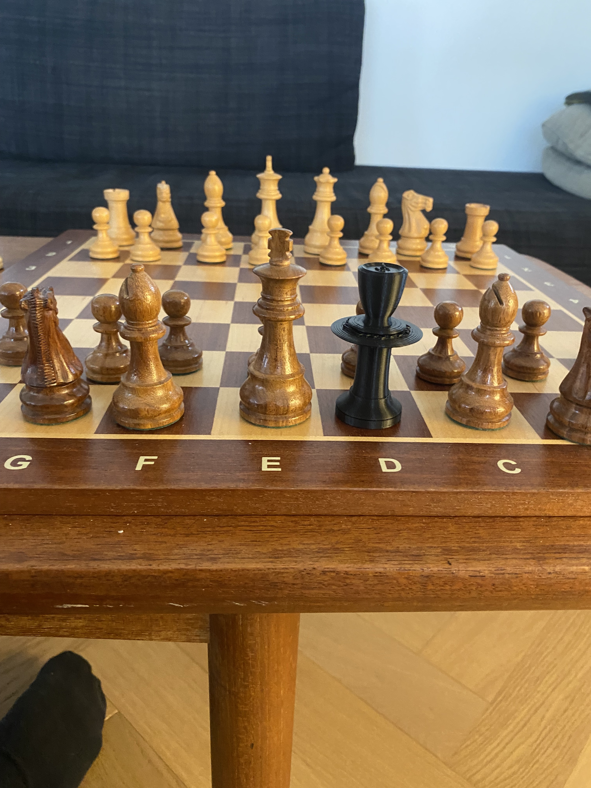

Til baka á forsíðu
Verkefni 3 - Tölvuvædd framleiðsla
Lýsing á verkefni 3 fer hér.
Þriðja verkefnið í þessum áfanga tengdist 3D skönnun og 3D prentun. Fyrsti hlutinn snérist um að 3D skanna einhvern hlut að eigin vali t.d með appi í símanum. Seinni hlutinn snérist um að hanna 3D módel í viðeigandi hugbúnaði sem ekki væri hægt að hanna með frádráttar framleiðslu. Verkefnið fól einnig sér að ákvarða hönnunartakmarkir og eina reglan sem var sett var að hluturinn mátti vera mest 100g hlut. Síðan var hluturinn prentaður í 3d prentara með aðstoð kennara.

Hluti 1: 3D skönnun á hlut
Ég byrjaði á því að hlaða niður appi í símanum sem heitir Qlone, en ég hafði heyrt að gamlir nemendur hafi notað það. Fyrst ég hafði enga reynslu á 3D skönnun þá ákvað ég að fara á youtube og horfði á Þetta myndband sýndi manni hverning á að nota appið. Eftir að hafa horft vel á vídjóið og öðlast grunnskilning á appinu þá þurfti ég bara að velja mér einhvern hlut. Mér datt fyrst í hug að sniðugt væri að 3D skanna andlitið á mér en komst fljótt að því að það yrði vesen því maður þarf helst að vera með augun á því sem maður er að skanna á öllum tímum, ásamt því að það sem maður er að skanna þarf helst að vera á flötu yfirborði. En ég er ekki með augu á hnakkanum og datt síðan í hug að sniðugt væri að 3D skanna Nikótínpúða dolluna sem ég var með í vasanum. Það hentar vel því dollann er ekki of stór né of flókinn. Forritið leiðbeindi manni svo í gegnum allt ferlið en maður einfaldlega leggur hlutinn á flatt yfirborð og skannar síðan hringinn í kringum hlutinn samvkæmt forritinu, en það birtist eins konar skál umhverfis hlutinn sem sýnir manni hvaða parta af hlutnum á eftir að skanna. Ferlið og lokaniðurstöður má sjá hér á myndum fyrir neðan.

Hluti 2-1: Ákvörðun hönnnunarþvinganna
Eftir að hafa horft á vídjó á Þetta vídjó með Hafliða, þar sem hann fór yfir verkefni 3 ýtarlega og hverning ætti að framkvæmda það, þá komst ég að því að mikilvægt er að gera prófanir áður en þú ferð að hanna og 3d prenta hlutinn sem þú hannar. Þannig að til að ákvarða hönnunarþvinganir var ákveðið að prenta þrjú box öll með mismunandi þykktir til að ákvarða hvaða þykktir myndu henta best fyrir hlutinn sem ég ætla að 3D prenta. Þá sjáum við greinilega hversu vel prentarinn höndlar að prenta mjög þunna hluti og þykkari hluti og hversu viðkvæmar mismunandi þykktir eru fyrir bjögun. Þykktirnar sem ákveðið var að prófa voru 50 mm 25mm og 10 mm. Boxið með minnstu þykktina var klárlega mun beygjanlegra en tvö stærri boxin og yrði þar með viðkvæmt fyrir broti og bjögun. Hin tvö stærri boxin voru hins vegar mjög sterk og ég átti erfitt með að bjaga þau. Þetta gaf mér mikilvægar upplýsingar um hverning 3D prentarinn höndlar mismunandi þykktir og gat áætlað hversu þunna veggi 3D módelið mitt ætti að hafa. Boxinn voru gerð í Fusion og tók u.m.þ.b 2klst að prenta. Hér að neðan má sjá myndir af þeim.

Hluti 2-2: Hönnunarferlið
Ég var afar óviss um hvað ég vildi hanna fyrir 3D prentarann. Eftir að hafa pælt svolítið í þessu þá datt mér í hug að hanna eitthvað fyrir heimilið eins og vasa eða eitthvað svoleiðis en ég hafði engan brennandi áhuga á því. Svo mundi ég að skáksettið sem ég á heima, vantar eina drottningu og hef ég þurft að nota einhvern hlut eins og strokleður í staðinn þegar ég tefli við einhvern. Það er ekki nógu gott og ég ákvað að hanna drottningu fyrir taflsettið, þar sem það er bæði nytsamtlegt og örugglega áhugavert að hanna. Ég fór því í Fusion og byrjaði að vinna að þessu. Hönnunarferlið gekk ágætlega en var ekki án nokkura hnikra og þurfti ég stundum að leita á netinu að lausnum þegar ég lenti í vandræðum. Ég byrjaði á því að hanna grunninn með notkun á skipunum eins og line, spline, rectangle, circle og arc. Eftir smá tíma var ég loksins nógu sáttur. Ég hafði hönnunarþvinganirnar í huga og passaði að gera grunnin nógu ,,breiðan,, til að hafa veggi drottningunar nógu þykka svo hún verði ekki auðveldlega bjöguð. Hér á neðan má sjá hverning grunnurinn leit út.
Síðan var einfaldlega notuð extrude skipunin í Fusion og eftir smá fínpúsunn var hönnunin tilbúin. Hér má sjá mynd af lokaafurðinni.
Hluti 2-3: Undirbúningur fyrir 3D prentarann
Þegar maður er búinn að hanna hlutinn sinn þarf maður að koma honum fyrir í viðeigandi húgbúnað sem að 3D prentarinn getur lesið og prentað út. Sá hugbúnaður er prusaSlicer. Ég hafði aldrei notað Slicer áður þannig ég horfði á Þetta myndband frá kennara sem lýsti skref fyrir skref hverning maður fer að því. Í myndbandinu sýndi hann manni hverning á að hlaða upp forritinu og hverning er hægt að nota það til að undirbúa hlutinn þinn fyrir geislaskerarann. Eftir að hafa horft á myndbandið færði ég hlutinn minn yfir í Slicer og byrjaði að vinna í honum þar. Ég prófaði að ýta á slice now sem sýnir manni hverning 3d prentarinn mun skera hlutinn en tók þá eftir því að það yrði vandamál fyrir hlutinn að haldast stöðugum við prentun.

Ég ákvað þess vegna til að vera öruggur að bæta við supports, en það er efni sem prentast umhverfis hlutinn til að halda honum stöðugum. Ég skalaði síðan hlutinn um 200 prósent til að ná honum í svipaðri stærð og hinir taflmennirnir í settinu. Efnið sem að hluturinn á að vera prentaður með var valið sem Prusament PLA og hann átti að vera prentaður með 0.15 nákvæmni, en þetta voru sömu stillingar og ég setti á boxinn sem að ég prentaði út. Eina sem nú var eftir að gera áður en drottningin var tilbúinn fyrir prentun var að exporta Skjalið sem Gcode, en það er ,,tungumálið,, sem að prentarinn skilur. Hér að neðan má sjá hverning þetta leit út áður en drottningin var prentuð.
Hluti 3: Lokaniðurstöður
Nú var allt tilbúið og 3d prentarinn búinn að skera fyrir okkur drottninguna. Ferlið tók í kringum 3 klukkustundir og gekk fyrir sig án nokkura hnakra. Þegar prentarinn var búinn að prenta tók ég hins vegar eftir því að ég gæti hafa notið of mikið af supports og hafði áhyggjur af því hvort það yrði vesen að ná öllu því efni af. Svo var ekki og hér á neðan má sjá myndir lokaniðurstöðum, beint úr prentaranum og þegar búið var að fjarlægja supports.
   Hönnunarskjal fyrir skákdrottninguna
Smelltu á hlekkinn hér að neðan til að hlaða niður Fusion 360 hönnunarskjalinu fyrir skákdrottninguna.
Hlaða niður skákdrottningunni